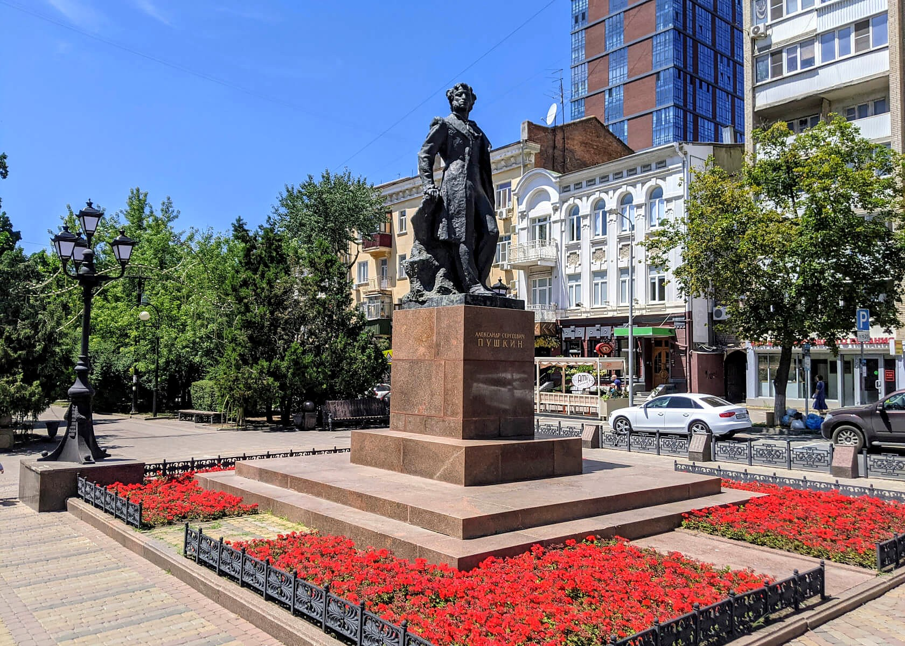

↖ СтенаПрохода нет
↖ СтенаПрохода нет
 ↑ Театральная площадьФонтаны и вечерняя подсветка
↑ Театральная площадьФонтаны и вечерняя подсветка
 ↗ Театр драмы имени ГорькогоЗдание в форме трактора
← СтенаПрохода нет
↗ Театр драмы имени ГорькогоЗдание в форме трактора
← СтенаПрохода нет
Цель: найти Академию архитектуры и искусств ЮФУ
Большая Садовая улица
Главная улица Ростова с особняками XIX–XX веков, кафе и спешащими прохожими.
Подсказка: Академии здесь нет. Загляните по тенистой аллее, где в листве прячутся старинные особняки.
 → Здание городской думыАдминистративное здание на Садовой
↙ СтенаПрохода нет
→ Здание городской думыАдминистративное здание на Садовой
↙ СтенаПрохода нет

↓ Пушкинская улицаЗелёные аллеи и особняки ↘ Кафедральный соборГлавный православный храм
↘ Кафедральный соборГлавный православный храм